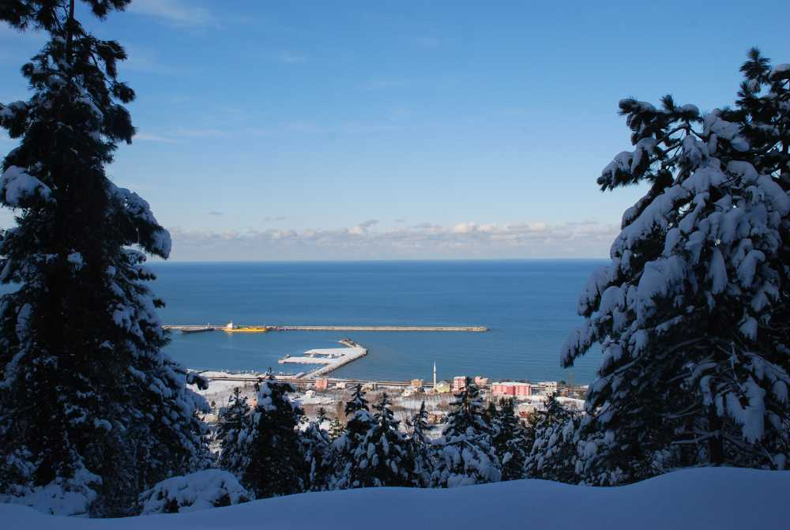
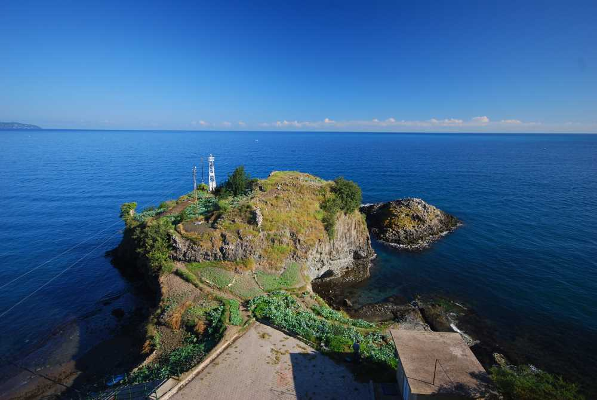
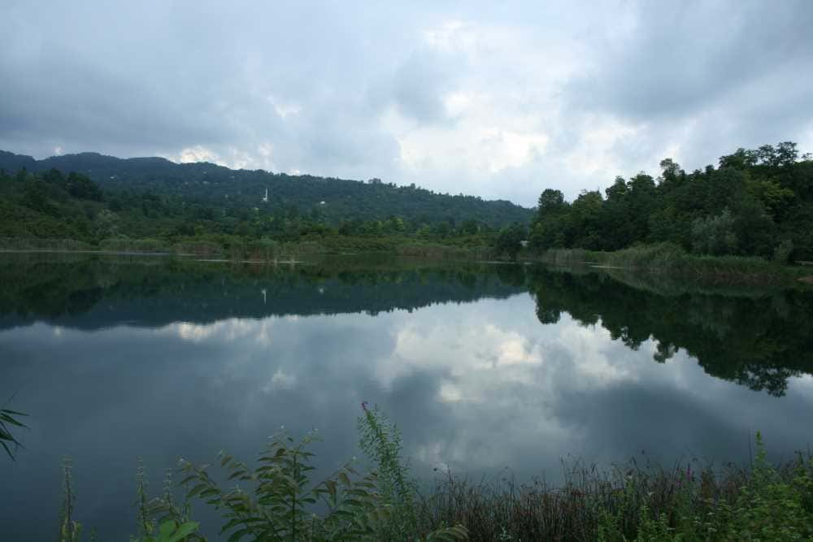
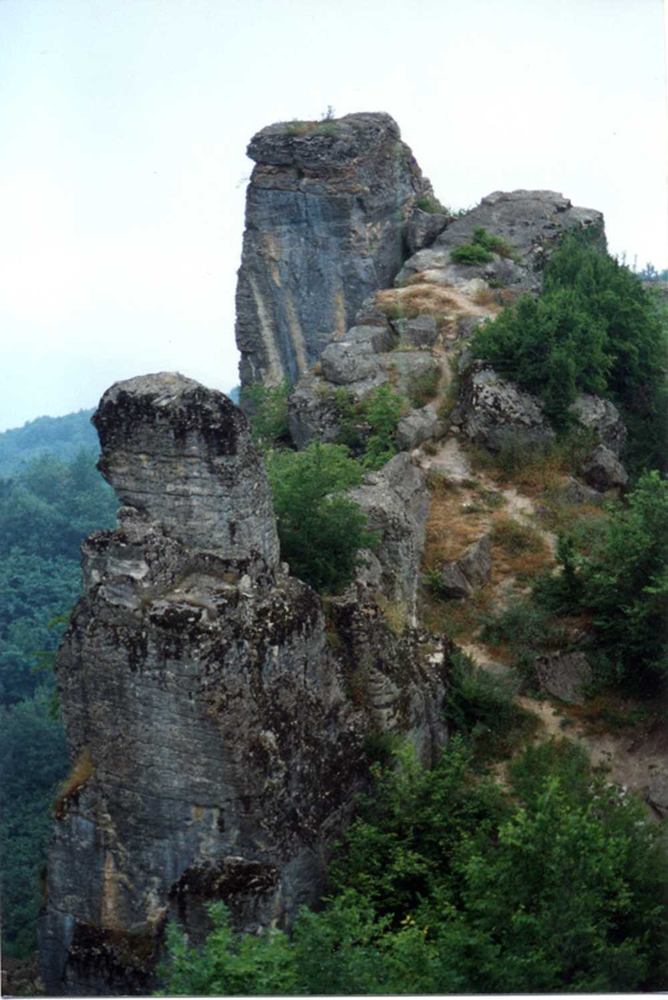
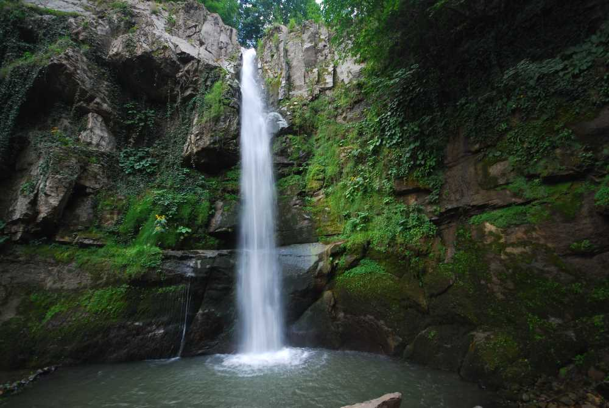
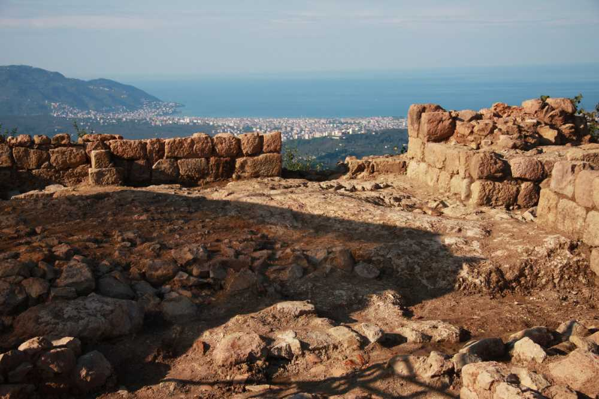

Şehirim
Ordu manzaraları tarihi eserleri ve şelaleri,nehirleriyle birlikte bir doğa harikasıdır.


Ordu İli Genel Bilgilendirme
Ordu, Türkiye'nin bir ili ve en kalabalık otuzuncu şehri. 2019 Yılı verilerine göre nüfusu 754.198’dir.Karadeniz Bölgesinde, Orta ve Doğu Karadeniz bölümünde yer almaktaydı. Ancak yeni oluşturulan ve bölgesel karışıklıkları ortadan kaldırmak için düzenlenen yeni bölgesel istatistiki düzenlemelerde Ordu ilinin tamamı Doğu Karadeniz topraklarında kaldı. İlin kuzeyinde Karadeniz, güneyinde Tokat ve Sivas illeri, batısında Samsun, doğusunda Giresun ili vardır. Büyükşehir statüsünde olan Ordu, 19 ilçeden oluşmaktadır. Yüzölçümü bakımından en büyük 57. ildir. Osmanlı döneminde, 1920 yılında, bağlı olduğu Trabzon Vilayeti'nden ayrılmış, 4 Nisan 1920 tarihinde il statüsüne kavuşmuştur. 2016 yılında TÜİK verilerine göre 19 İlçe ve belediye, bu belediyelerde toplam 741 mahalle bulunmaktadır.İl merkezinden doğuya gidildikçe Gülyalı, batıya sahil kara yolundan gidildikçe Perşembe, otobandan gidildikçe Fatsa ilçelerine ulaşılır.
Ordu İli Nüfüs Sayımları
Ordu İl Nüfusu: 750.588'dir (2016).İlin yüzölçümü 5.861 km²'dir. İlde km²'ye 128 kişi düşmektedir. (Yoğunluğun en fazla olduğu ilçe: 501 kişi ile Altınordu’dur) İlde yıllık nüfus artış oranı %2,97 olmuştur.
| Yıl | Toplam | Şehir | Kır |
| 2016 | 750.588 | 624.320 | 175.210 |
Orduda Başlıca Ziyaret Edilebilecek Yerler

Ordu Boztepe
Boztepe - Ordu Ordu şehri Boztepe’nin yamaçlarına serilmiştir. Denizden 450 metre yükseklikte olup, ilin tüm güzelliklerini, Karadeniz’in muhteşemliğini Boztepe’den seyretmek doyumsuzdur. İl merkezine 6 kilometre mesafede olup asfalt yolla ve dilerseniz teleferikle ulaşmak mümkündür. Yeme içme ve dinlenme tesisleri ile ormanlık piknik alanları mevcuttur.
Asarkaya Kent Ormanı
Asarkaya Kent Ormanı Ünye İlçesine 4 kilometre mesafede Ünye-Fatsa yolu üzerinde Orman İşletme Müdürlüğünce ağaçlandırılmış mesire ve piknik alanıdır. Dokusunda barındırdığı bir çok yaban hayvanı ve bitki çeşidiyle dikkat çekmektedir. Kuş gözlemciliği ve doğa yürüyüşü için idealdir.
Cotyora ( Bozukkale)
Ordu ili’nin ilk kuruluş yeri olarak bilinen Cotyora ( Kot Türklerinin yurdu) Kod Yurdu halk arasında Bozukkale, yapılan araştırmalara göre Bizanslılarca XI. yüzyılda yapılan küçük bir gözetleme kulesi olduğu anlaşılmıştır. Ordu-Samsun karayolu üzerinde il merkezine 2 km mesafede deniz kenarındadır. 2. derece arkeolojik SİT alanı olarak tescillidir.
Gaga Gölü / Fatsa - Ordu
Fatsa-Aybastı karayolu üzerinde Fatsa İlçesi’nin 10 km kuzeydoğusunda yer alan Gaga Gölü, Örencik Köyü sınırları içindedir. 60 dekarlık bir alanı kaplamaktadır.Gaga Gölü Bolaman Irmağı ile batısındaki Yassıtaş mevkii arasında; yaklaşık 6 km²’’lik bir alanı etkileyen heyelan sonucu,yapıyı oluşturan üst Kretase flisleri yüzeyinde oluşmuştur. Gölün Derinliği 10-15 metre arasında değişmektedir. Gölün ortasında küçük bir adacık bulunmaktadır.Fındık bahçelerinin arasında,yeşillikler içindeki göl,birçok bitki ve hayvan türünü barındırır.Göl 1.ve 3. Derece Doğal Sit Alanı olarak koruma altına alınmıştır. Gölde dört çeşit balık vardır.
Kuşfenak Kalesi-Kumru/Ordu
Kumru İlçesi sınırları içerisinde bulunmaktadır. Merkeze 3 km mesafededir
Ohtamış Şelalesi
Ulubey İlçesine 20 km, Ordu’ya 38 km uzaklıkta Ulubey ilçesi, Ohtamış Köyünde bulunan şelale, Karadeniz’in en büyük şelalesidir. 30 metre yükseklikten 90 derecelik bir eğim ile dökülmektedir
Kurul Kalesi Yerleşkesi
KURUL KALESİ YERLEŞKESİ İlimiz merkezine 13 km. mesafedeki Bayadı köyü sınırlarında bulunan sivri bir kaya üzerine kurulmuş 1. derece arkeolojik ve Doğal Sit alanı olup, antik bir yerleşmedir. 250 - 300 adet merdiven gün ışığına çıkarılmıştır. Kazı esnasında bulunan pişmiş topraktan çatı kiremitleri, duvar örgüsü seramik parçaları incelenmiş ve M.Ö. II. ve I. Yüzyılda yerleşim yapıldığı tespit edilmiştir. Yapılan çalışmalar ile piknik alanı düzenlenmiştir. Alan içinde tarihi dehliz ve su sarnıcı bulunmaktadır. Yürüyüş parkurları, oturma grupları, seyir terasları yapılmış olup, ışıklandırılmıştır. Mükemmel temaşa zirvesidir.